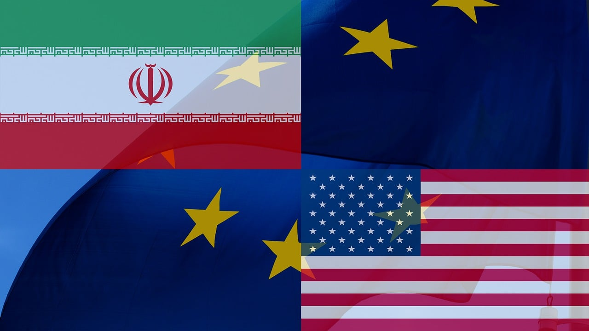

L'Iran mette Meloni nella lista nera: Vendetta. Trump congela la Nato
Il quotidiano iraniano Hamshari pubblica i volti dei leader occidentali ritenuti responsabili della morte di Khamenei. La premier italiana finisce in un fotomontaggio con la divisa da detenuta. Mentre l'intelligence italiana avvia verifiche, il vertice Nato di Ankara si trasforma in uno scontro frontale tra Trump e gli alleati europei.
ROMA
Un fotomontaggio con l'uniforme arancione da prigioniero, il volto di Giorgia Meloni stampato sulla stessa "divisa della vergogna" usata dall'Isis e da Guantánamo. È l'immagine pubblicata dal quotidiano iraniano Hamshari, vicino al Comune di Teheran, che ha diffuso una "lista nera" dei leader occidentali ritenuti responsabili della morte dell'ayatollah Ali Khamenei, ucciso in un raid congiunto USA-Israele.

Accanto a Meloni, nella lista compaiono Donald Trump, Benjamin Netanyahu, Keir Starmer, Emmanuel Macron e Friedrich Merz. Mentre l'intelligence italiana ha già avviato verifiche sulla minaccia, il nuovo leader iraniano Mojtaba Khamenei — figlio del defunto ayatollah — ha lanciato un messaggio che non lascia spazio a interpretazioni: "La vendetta è la richiesta della nazione e deve assolutamente avvenire."
La lista nera e la minaccia alla premier
La pubblicazione di Hamshari rappresenta un'escalation senza precedenti nella guerra psicologica tra Iran e Occidente. Il fotomontaggio che ritrae la premier italiana in divisa arancione è un chiaro messaggio di ostilità. Secondo quanto riportato da Sky TG24, sono in corso verifiche da parte dell'intelligence italiana per valutare il livello di minaccia.
Non è la prima volta che l'Iran punta il dito contro leader occidentali dopo l'operazione che ha ucciso Khamenei, ma la pubblicazione su un quotidiano con legami istituzionali iraniani trasforma la minaccia da propaganda a segnale concreto.
Vertice Nato: Trump gela gli alleati
Il vertice Nato di Ankara (7-8 luglio) ha mostrato un'alleanza atlantica lacerata. Donald Trump ha usato il palco del Consiglio Atlantico per attaccare frontalmente i partner europei, accusati di aver "voltato le spalle" agli Stati Uniti. Il presidente americano "è arrivato a dire d'aver raggiunto Ankara soltanto per Erdogan", gelando i rapporti con Meloni. Richiesto un aumento della spesa militare al 3,5% del PIL entro il 2035.
Un'Europa nel mezzo
Per l'Italia il quadro è particolarmente delicato: la premier Meloni si trova esposta su due fronti. Il primo è la sicurezza personale, con l'intelligence che valuta il livello di minaccia. Il secondo è diplomatico: mantenere un rapporto con l'amministrazione Trump senza subire le umiliazioni pubbliche del vertice di Ankara.
Le sfide della nuova leadership iraniana
Mojtaba Khamenei sta cercando di consolidare il proprio potere in un momento di crisi. Gli analisti avvertono: la minaccia concreta non è tanto un attacco diretto quanto azioni asimmetriche attraverso proxy, cyberattacchi o operazioni dei servizi segreti.